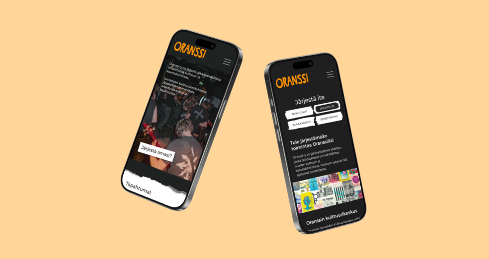

Oranssi ry
Website redesign

Summary
Oranssi is a youth organization based in Helsinki. The idea of Oranssi is to provide young people with the opportunity to independently produce their own kind of culture and to self-create their living environment.
Role
Team Lead
UI Designer
Timeline
2 months
Tools
Figma
Wordpress
Overview
Oranssi ry needed a new website as their old one was outdated both in visual design and in usability. The goal was to create a fresh look for the site, while also improving the navigation structure to make it easier for users to find information about events, volunteering opportunities, and organizing events at Oranssi.
As the team lead and UI designer, I coordinated the design process and ensured that our vision aligned with the client's needs. We focused on creating a user-friendly experience with an aesthetic that reflects the do-it-yorself attitude of Oranssi ry.
The Challenge
The client wanted to have a new look for the site, matching the organizations eventposters which they publish on Instagram. Our challenge was also to rearrange the very complex navigation bar to something more simple. The site's focus should be finding information about organizing events at Oranssi and making it easier to get involved with volunteering and organizing events.
The Process
We started the design process by analyzing the existing website to identify usability issues and areas for improvement. We also looked into the client's Instagram account, which gave a lot more modern vibe for the organization.
Then we prepared a survey for Oranssi visitors, asking them how they feel about the organization, whether they use the website, and if they have issues using it. Additionally, we conducted two interviews with active Oranssi participants. Our design choices were guided by user personas and use cases created from the questionnaire and interviews.
We facilitated a workshop with Oranssi's employees' to get a better idea of the organization's value and personality, as well with the client's wishes with the visuals more in-depth. Our result was that they wanted the website to be quite clean, mostly black and white, with just a little color. In their posters are a lot of papery and crafty elements, which we wanted to implement on the site.
With benchmarking similar organizations, we found out examples of organizing the navigation. We made an information architecture map from the old site, broke it down to small pieces, and build it over to simplify it.

Then we created wireframes for the new site, focusing on a clean and intuitive design. We moved on to designing the layouts in Figma. We incorporated bold typography and a monochromatic color scheme with pops of orange to suit Oranssi's branding.
During designing the layouts, we sent the client multiple options of different versions of the visuals to get their feedback before committing to a spesific design choice.

We applied crafty, paper-like textures and elements into the design to echo the aesthetic found in Oranssi's event posters. This approach helped to create a unique visual identity for the website that resonates with the organization's spirit.

Our team also provided a full English translation of the site, replacing the old “In English” summary page.
After finishing new layouts in Figma, we moved the new site on the web. The site is hosted with the free version of Wordpress, where we build a whole new theme for the site to make it truly their own.
Finally we provided a guide for the client for updating the page efficiently.
The Outcome
The new website effectively represents Oranssi Ry's brand with its modern, user-friendly design. Users can effortlessly find information about events, volunteering opportunities, and organizing events at Oranssi thanks to the improved navigation structure.
The implementation of crafty, paper-like elements successfully captured the organization's DIY spirit, creating a cohesive visual identity across their online presence.


Reflection
I gained a lot of confidence as a designer during this project. My first time (and hopefully not the last) working as a team lead, which I enjoyed a lot. Got good feedback from my team mates for my ability to organise and coordinate everything.
Feedback
"The collaboration went smoothly. Communication was fast and efficient. They were open and receptive to our wishes and feedback. They understood Oranssi's concept perfectly, and we felt clearly heard. The website turned out clean, clear, and fresh. The end result met our expectations, if not exceeded them."